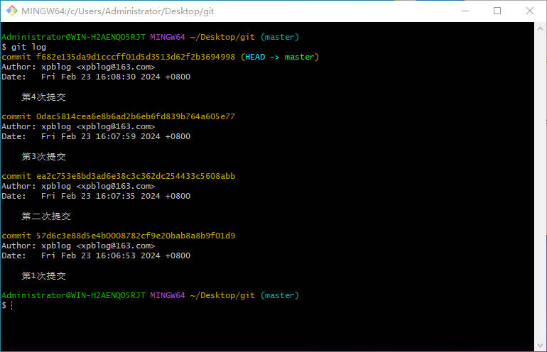
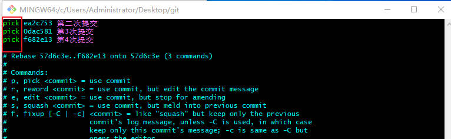
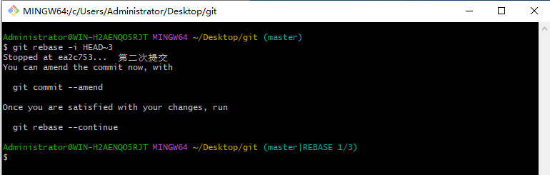
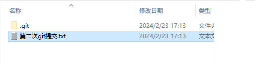
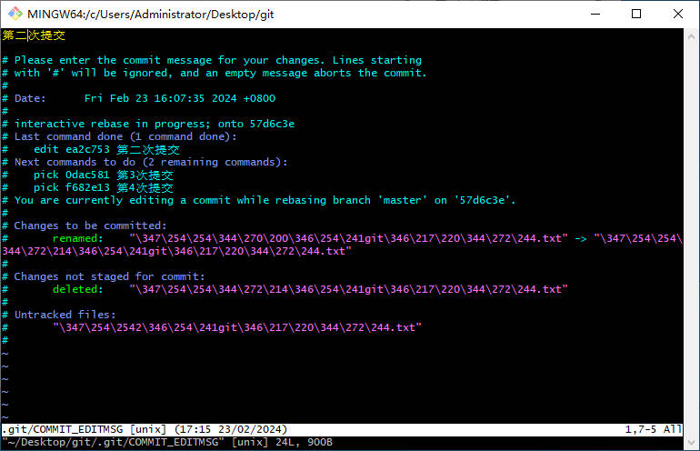

Git奇淫技巧篇：修改历史commit提交消息和文件
[作者] 棚子 [创建时间] 2024-02-23 17:24:03问题
在使用git过程中，可能有这样一种需求。多个功能A，B，C依次开发(A，B功能还没上线)，开发C功能的时候，A功能有BUG需要修复
这种情况下，可以重新拉取分支修复…有多种方案。但是，如果不想有多余提交记录，只是想在原来的那次提交上修复的话，怎么办？
方法
比如，我的多次提交记录如下，我想修改第二次的提交文件

rebase HEAD 到要修改的地方
git rebase -i HEAD~3 |

按i键，在要编辑的提交记录前面，把pick改成edit(或者e)，ESC，按:wq保存退出

此时的git分支信息变成了(master|REBASE 1/3)，此时就可以去编辑你要编辑的文件了，修复BUG…此时文件就处于你编辑的那次提交的状态

编辑完成后，就可以提交代码了
// 覆盖之前的commit |
代码可能有冲突，有冲突则解决冲突后，再 git rebase --continue，同时，还是编辑那次提交的commit信息，编辑完成后:wq，保存退出

再次查看提交信息，发现已经变成我们修改后的文件了

如果在rebase过程中，不想修改了，则可以退出rebase
git rebase --abort |
踩坑
- 如果git提交的次数不够多，在
git rebase -i HEAD~5数字过大，会报错fatal: invalid upstream 'HEAD~6'
Contact me at E-mail
[阅读量 次]
[阅读量 次]